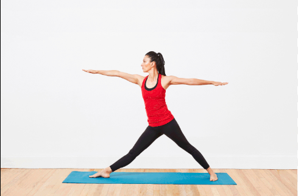
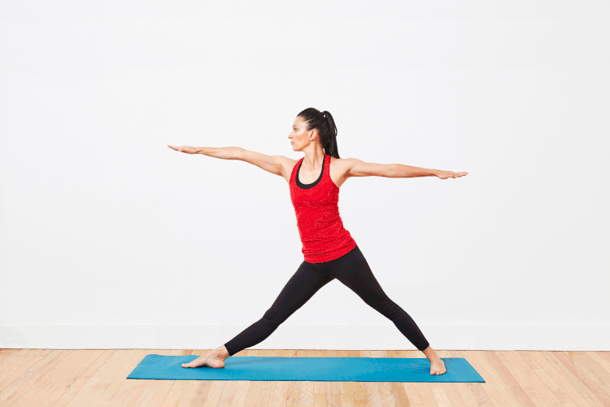

How to Perform the Warrior Pose
The Warrior Pose, or Virabhadrasana, is a powerful standing yoga pose that strengthens the legs, opens the hips and chest, and improves concentration and balance. It is one of the foundational poses in many yoga practices.
Step 1: Starting Position
Begin by standing in Mountain Pose (Tadasana). Take a deep breath in and step your feet about 3-4 feet apart, aligning your heels.
Step 2: Transition into Warrior Pose
Turn your right foot out 90 degrees and your left foot slightly inwards. As you exhale, bend your right knee over your right ankle, making sure your thigh is parallel to the floor. Extend your arms out to the sides, parallel to the floor, and gaze over your right hand.
Step 3: Hold the Pose

Hold the pose for several breaths, feeling the strength and stability in your legs and core. Keep your shoulders relaxed and chest open.
Step 4: Return to Starting Position
Inhale as you straighten your right leg. Exhale and bring your arms down to your sides. Turn your feet forward and step back to Mountain Pose. Repeat on the other side.